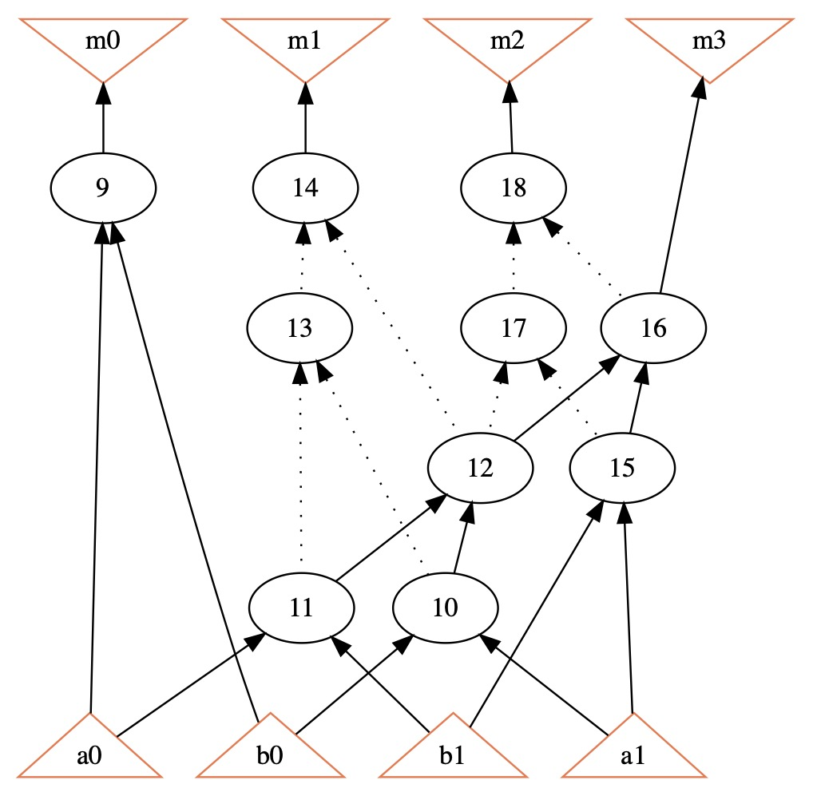

Tutorial - Example 1 - Boolean Networks
Author: Cunxi Yu
2-bit Multiplier And-Inv-Graph (AIG) representation
This is an example of processing 2-bit Multiplier in AIG
representation for intefacing PyG.
Step 1: Process in ABC
./abc
abc 01> read mult-2b.blif
Hierarchy reader flattened 10 instances of logic boxes and left 0 black boxes.
abc 02> strash
abc 03> write_edgelist mult-2b.el
WriteEdgelist (Verilog-to-PyG @ https://github.com/ycunxi/Verilog-to-PyG) starts writing to mult-2b.el
abc 04> write_edgelist -h
usage: write_edgelist [-N] <file>
writes the network into edgelist file
part of Verilog-2-PyG (PyTorch Geometric). more details https://github.com/ycunxi/Verilog-to-PyG
-N : toggle keeping original naming of the netlist in edgelist (default=False)
-h : print the help massage
file : the name of the file to write (extension .el)
Step 2: Check edgelist file written (mult-2b.el)
{kind=link}
Specifically, here Pi/Po are hashed from ID 1 to 8
a0 = 1/9, b0 = 2/10, b1 = 3/11, a1 =4/12
m0 = 23/5, m1 = 24/6, m2 = 25/7, m3 = 26/8
note that Pi/Po nodes in AIGs have Pin node (2nd hash value)
others are AIG nodes
# Benchmark Edgelist Dumping (beta) "Multi2" written by ABC on Sun Apr 23 17:03:50 2023 (more at https://github.com/ycunxi/Verilog-to-PyG)
1 9 Pi 00
2 10 Pi 00
3 11 Pi 00
4 12 Pi 00
9 23 AIG 11
11 23 AIG 11
10 27 AIG 11
11 27 AIG 11
9 28 AIG 11
12 28 AIG 11
27 29 AIG 11
28 29 AIG 11
27 30 AIG 00
28 30 AIG 00
29 24 AIG 00
30 24 AIG 00
10 31 AIG 11
12 31 AIG 11
29 26 AIG 11
31 26 AIG 11
29 32 AIG 00
31 32 AIG 00
26 25 AIG 00
32 25 AIG 00
23 5 Po 00
24 6 Po 00
25 7 Po 00
26 8 Po 00
Step 3: Check the topology of the netlist
For example, one path of the AIG is
1 9 Pi 00 # a0
3 11 Pi 00 # b0
9 23 AIG 11 # a0 * b0 = 23 (solid AIG edge)
11 23 AIG 11 # a0 * b0 = 23 (solid AIG edge)
23 5 Po 00 # 23 = 5 = m0
{kind=link}